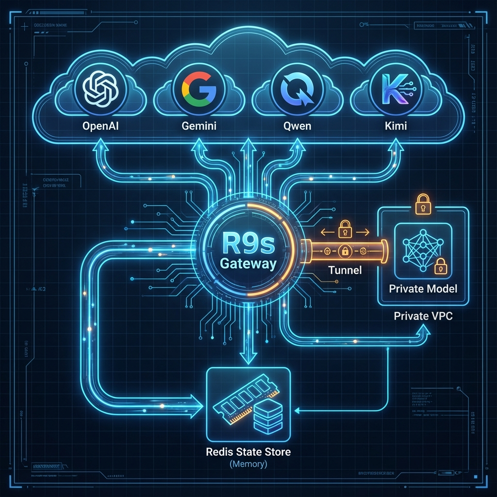

💡 Scoop: 以前的 TTS 像广播员，现在的模型有"灵魂"。呼吸声、吞字是标配。
"0.5B Model Open Sourced (Dec)"
💡 Insight: 开源模型 (Open Source) 的效果正在快速逼近闭源 API，为私有化部署提供了真正可用的选项。
"听得懂弦外之音"
💡 Scoop: AI 终于能听懂你的"语气"了，而不只是"文字"。
💡 Scoop: AI 音乐真正的第一战场，不是专业音乐 (周杰伦)，而是短视频 BGM。
| 赛道 (Track) | 推荐模型/产品 | 核心优势 (Hook) | 阿里云生态结合点 |
|---|---|---|---|
| 基础设施 | Retell AI / Vapi | "AI 电话神经系统，解决打断" | 阿里云低延迟网络 + ACK |
| 情绪/表演 | Fish Audio / MiniMax | "不仅是读字，是表演" | 跑在阿里云 GPU 实例 (EGS) |
| 开源极速 | F5 / CosyVoice 3.0 | "零样本克隆，开源速度王" | CosyVoice 阿里自研/ModelScope |
| 全能大脑 | Qwen3-Omni / Gemini 2.5 | "听得懂弦外之音的原生多模态" | 通义千问家族，百炼平台 |
| 音乐生成 | Suno v4 | "完整的歌曲结构生成" | 泛娱乐出海客户首选 |
企业语音服务正式进入
「人机协同」时代。
基于 CosyVoice 3.0 + Qwen3
构建企业级私有化 Voice Agent。
合规、可控与可审计，
是最大的长期护城河。

⚡ The "OS" for Enterprise Agents
🧪 R9s Labs
Calling all Agent Developers!
Systems Engineers
Core Team | Distributed System | High Concurrency
Help us build the "Traffic Control" for the Agent Era.
Welcoming VC Partners
Support Open Source & Infra
Let's fuel the next generation of Open Source Voice Infrastructure.
Weidong Shao
欢迎大家从场景、技术、商业模式三个角度来"拆解"你心中的语音 Agent。